Regarder
Choisir un détail, une lumière, une scène ou une sensation.
Les Carnets du Bosquet
Des ateliers sensibles pour regarder un lieu avec attention, en faire une interprétation personnelle et garder une trace de ses découvertes.


Le concept
Le Carnet Café est un atelier où l’on mêle dessin, mots, couleurs et collage pour observer un lieu, l’interpréter et en construire un récit personnel. Les propositions invitent à regarder, choisir, transformer et composer, chacun avec son propre langage.
Choisir un détail, une lumière, une scène ou une sensation.
Tester quelques traits, couleurs, mots et collages dans son carnet.
Échanger autour des pages et repartir avec une trace personnelle.
Le déroulement
On prend en main le carnet et le matériel avec quelques exercices, puis on part en déambulation observer le lieu avant de revenir composer les pages et les partager.
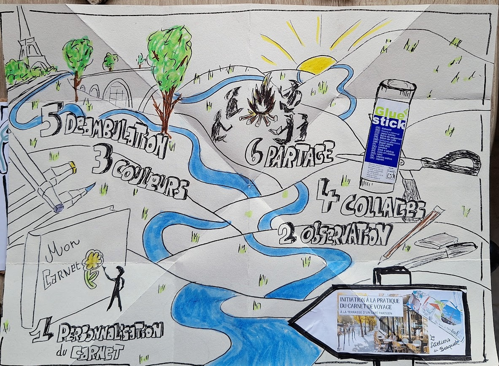
Photothèque
Une sélection d’images qui s’enrichira au fil des séances, pour garder la trace des lieux, des gestes et des pages réalisées.
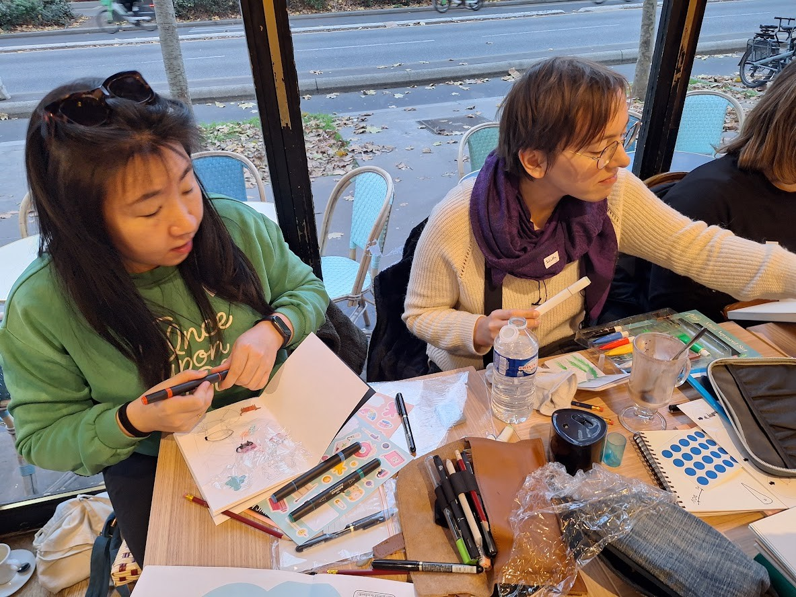
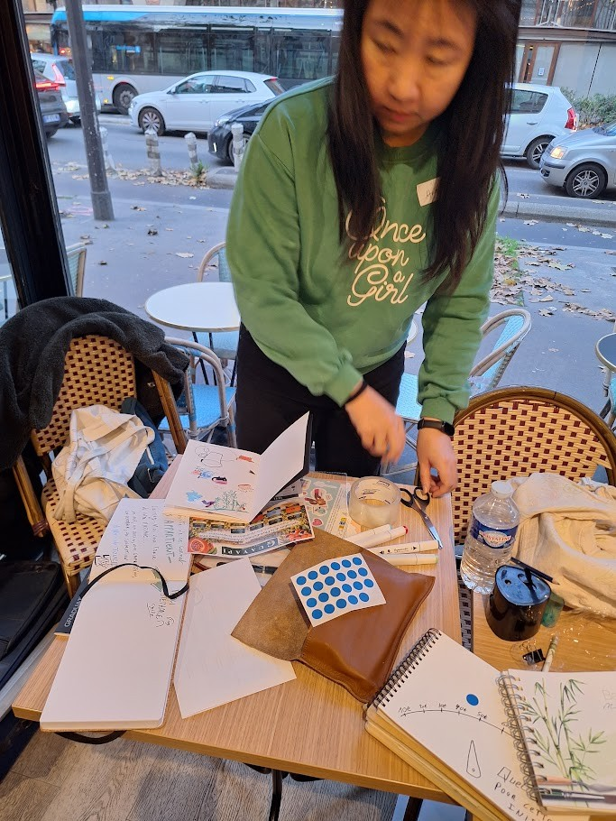
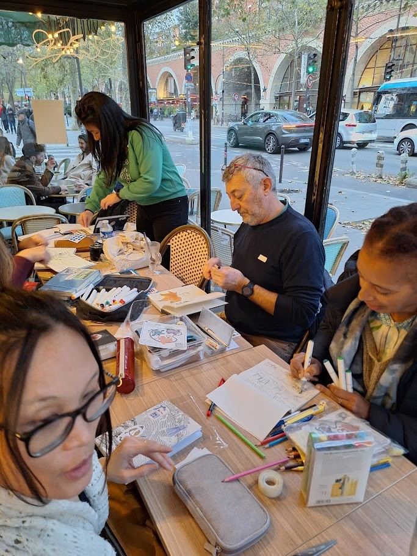
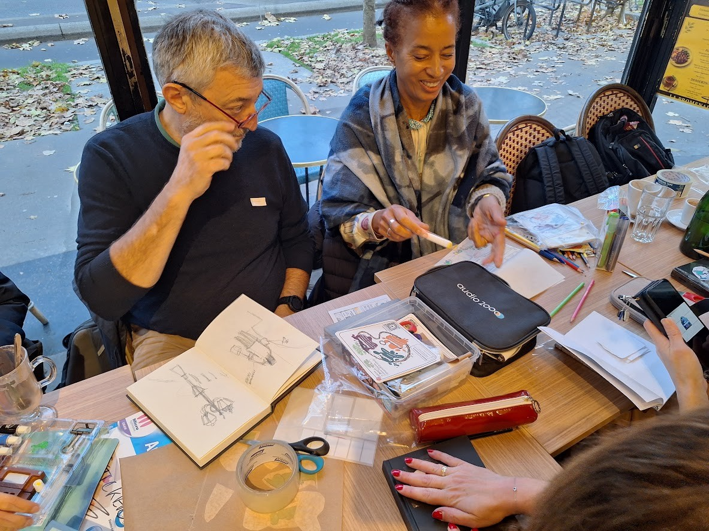
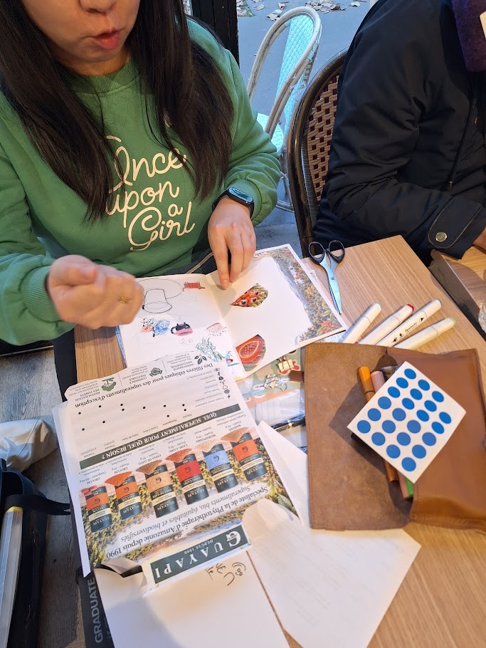
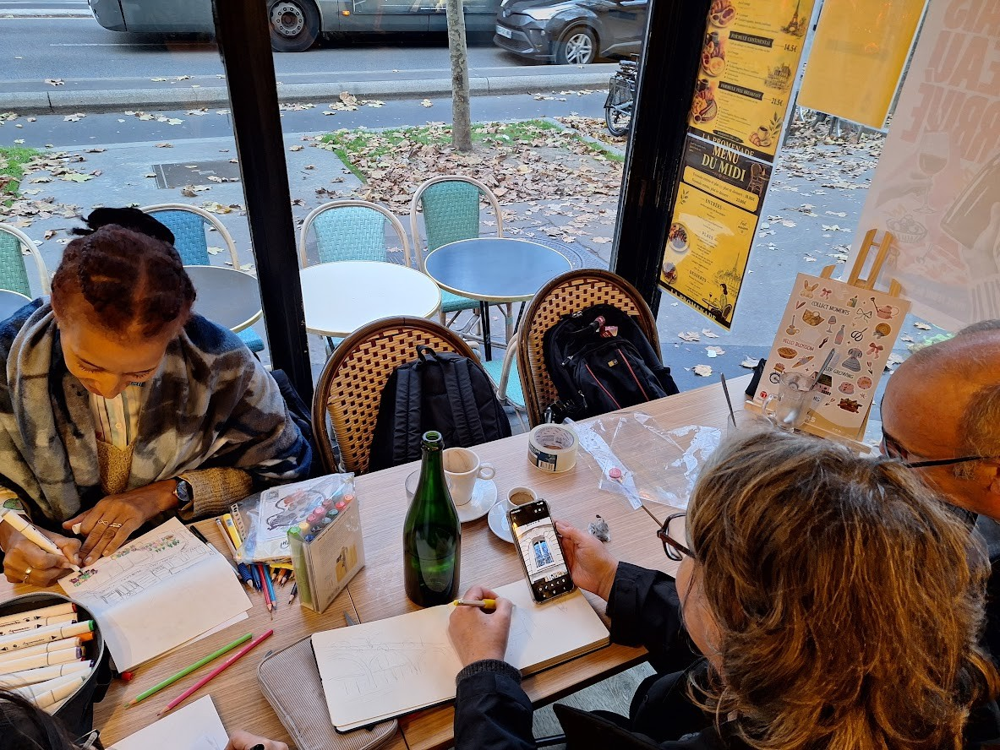
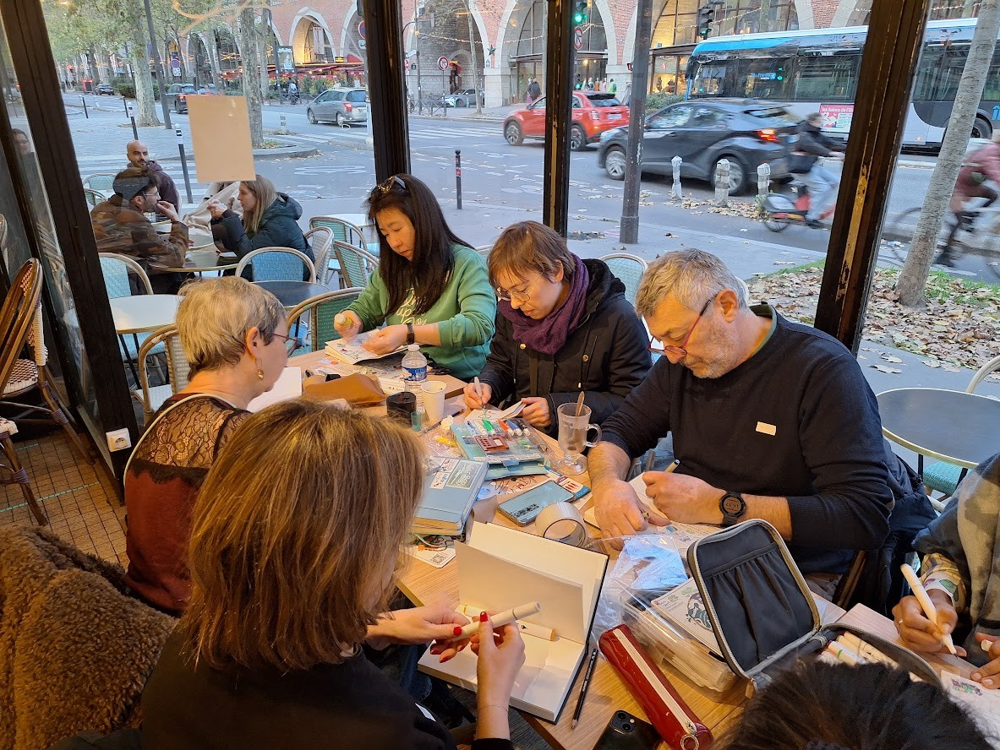
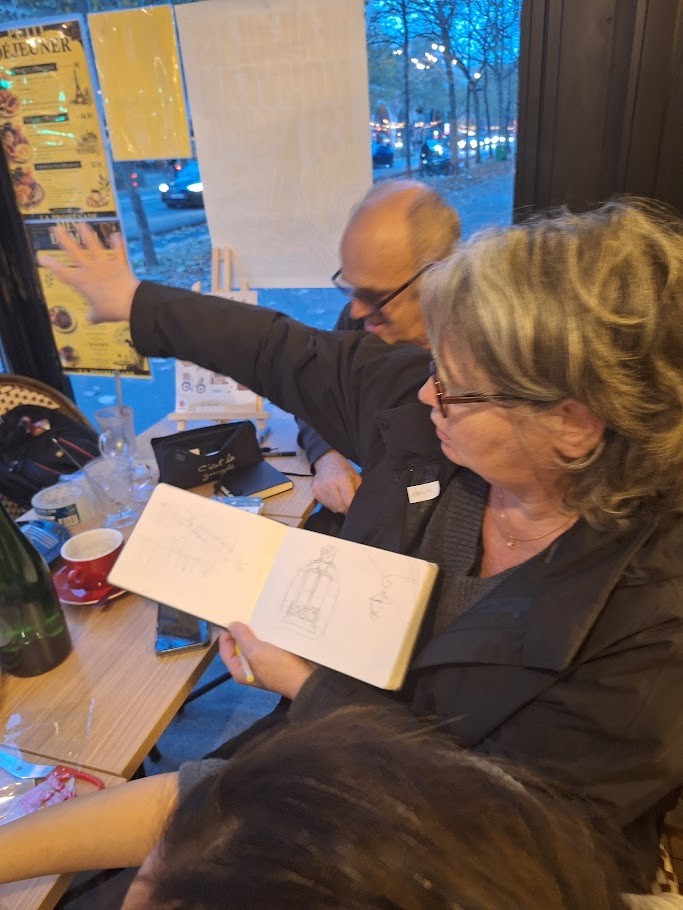
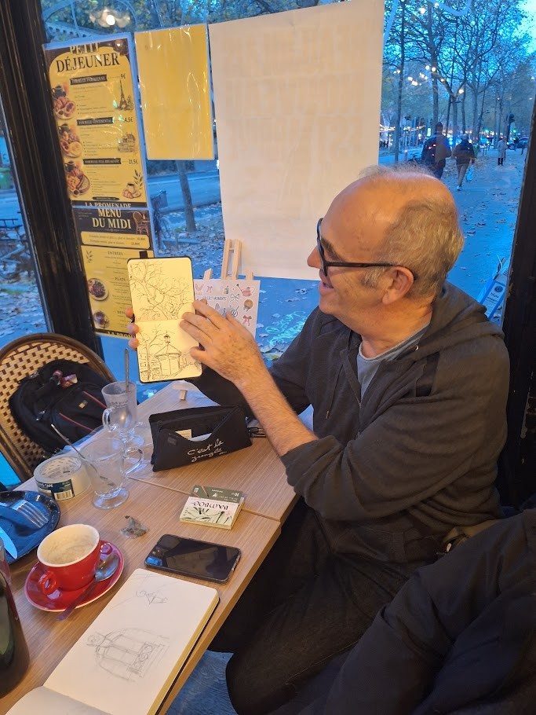
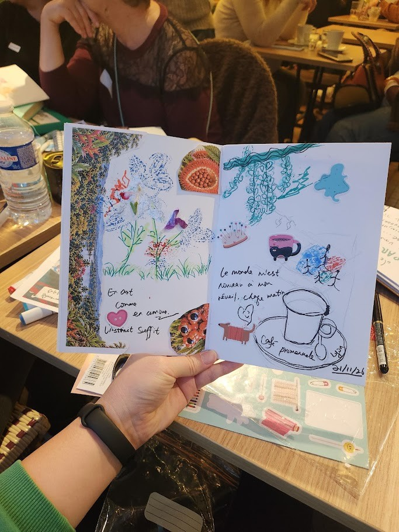
Retours de participants
Vous aussi, partagez votre expérience :
via le formulaire
Retour de séance
« Merci de m’avoir donné envie de dessiner un carnet de voyage. Échange avec de merveilleuses personnes, balade d’observation, tips dessin. »
Retour de séance
« Bonne idée la sortie pour observer et dessiner des détails ou pas. Je n’avais jamais fait le dessin rapide et j’ai beaucoup aimé. »
Retour de séance
« Merci pour ce partage et pour cet atelier qui m’a permis d’ouvrir mon champ des possibles. »
Retour de séance
« Un bon moment partagé. À continuer ! »
Retour de séance
« Merci pour cette initiation du carnet de voyage et pour les échanges avec les autres participants. »
Retour de séance
« Une belle balade d’observation, des idées concrètes et l’envie de continuer. »
Retour de séance
« Je repars avec des pistes pour observer et dessiner des détails autrement. »
Les lieux
Pour l’instant, les initiations sont imaginées dans des lieux parisiens : le Viaduc des Arts, les quais de Seine, la tour Eiffel, Montmartre, le canal Saint-Martin, le Jardin des Plantes ou d’autres quartiers propices à l’observation.
Le lieu sera communiqué une fois le groupe constitué, selon le nombre d’inscrits et la disponibilité des cafés hôtes.
.jpg)


Inscription
Les dates et les lieux sont indiqués dans le formulaire.
Le lieu est communiqué lorsque le groupe est constitué.
Les enfants peuvent participer accompagnés d’un adulte.
Chacun règle sa consommation au café hôte.
Les séances réunissent de 5 à 8 participants maximum.
Une initiation de 3 heures dans un lieu parisien.
58 €La même séance de 3 heures pour partager l’expérience avec un proche ou un collègue.
104 €Les conditions générales de vente seront accessibles avant le paiement et acceptées au moment de l’inscription.
S’inscrire / demander une datePour les collectifs
Une équipe, une association ou une communauté peut aussi se raconter par les images. Les ateliers s’adaptent à votre lieu, votre sujet et votre rythme : carnet de territoire, carnet d’équipe, récit d’un projet ou fresque de traces.
Parler d’un atelier pour votre collectifUn format sur mesure, de quelques heures à un cycle, avec une restitution collective.
Deux chemins pour aller plus loin
Les Ateliers du Bosquet proposent plusieurs chemins pour créer, transmettre et faire grandir les collectifs.